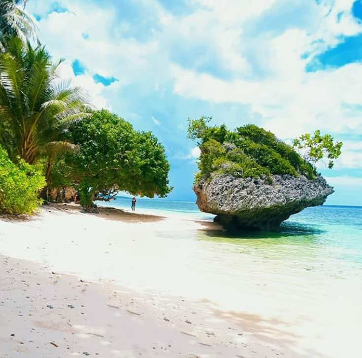

Pantai Mowuru
Berlokasi di Desa Linsowu, Kecamatan Kalisusu, Buton Utara. Akses untuk menuju lokasi lumayan sulit karena harus melewati jalan tanah agak susah saat musim hujan serta menerobos semak belukar. Namun untuk menuju lokasi kini sudah terdapat tangga jadi tidak perlu memanjat lagi.
Pantai ini memiliki pasir putih semi merah muda yang cantik ditambah air lautnya sangat jernih karena masih belum banyak terjamah tangan jahil manusia. Aktivis yang bisa dilakukan di pantai adalah berenang dan menyelam. Tempatnya sangat sejuk dan asri walaupun saat siang hari karena banyak ditumbuhi pohon kelapa.